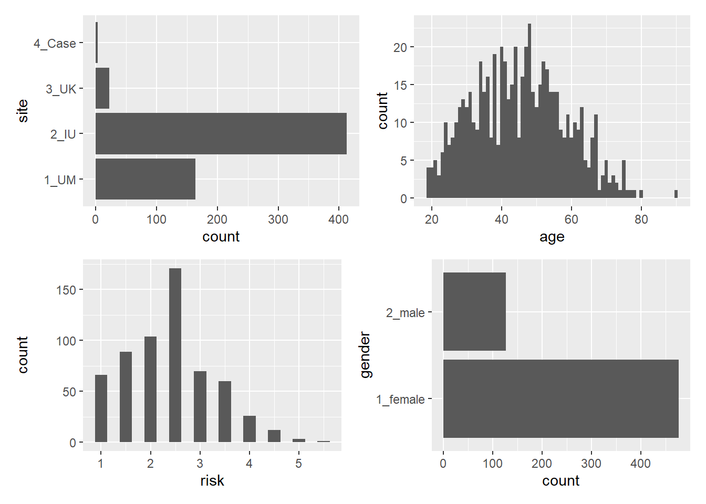
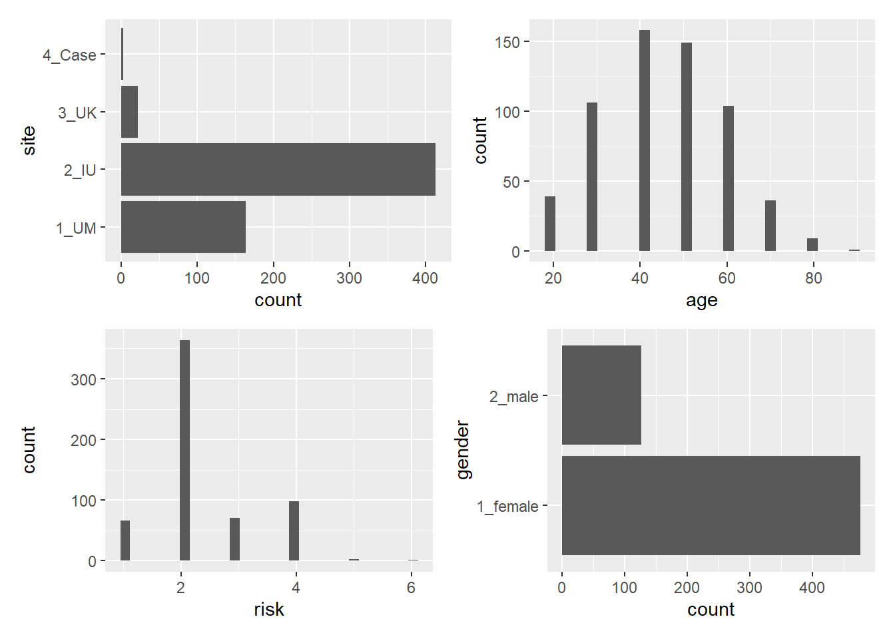
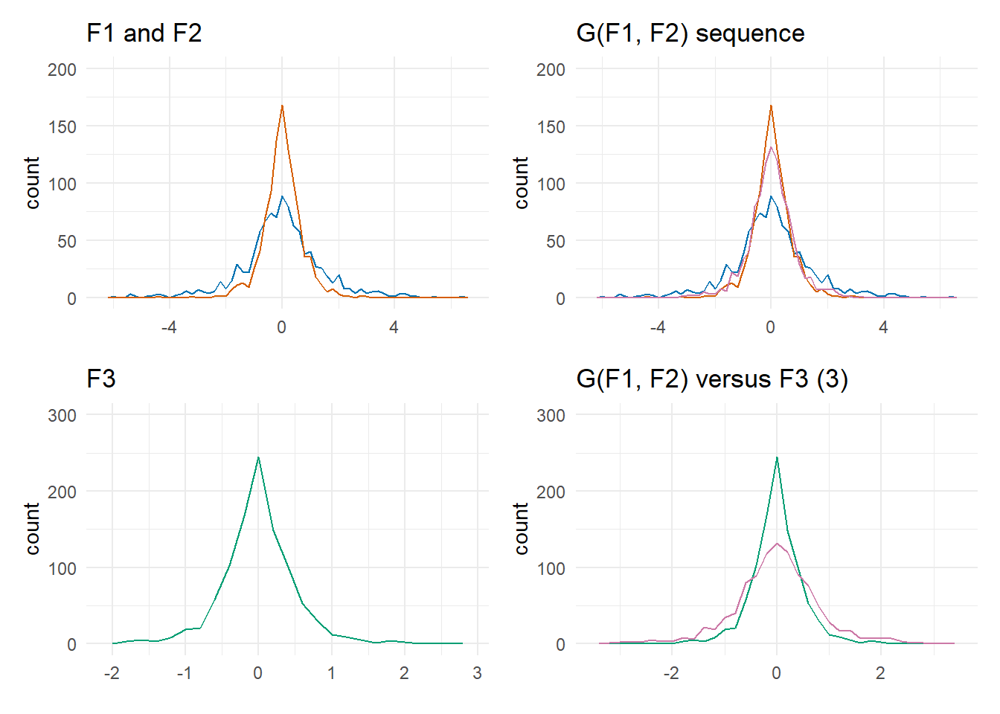
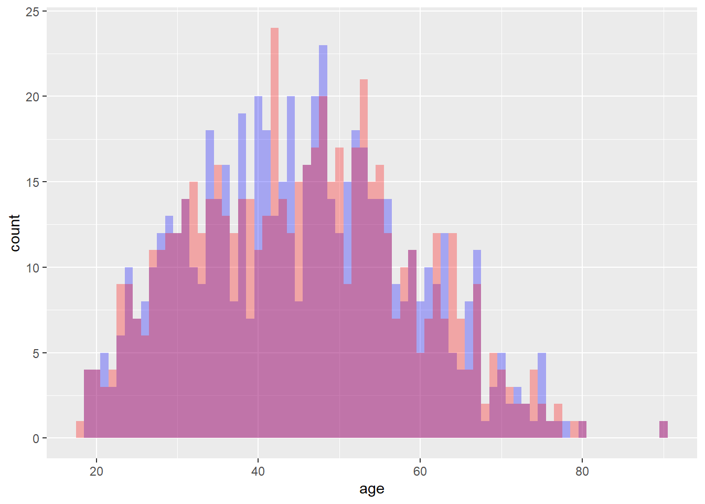
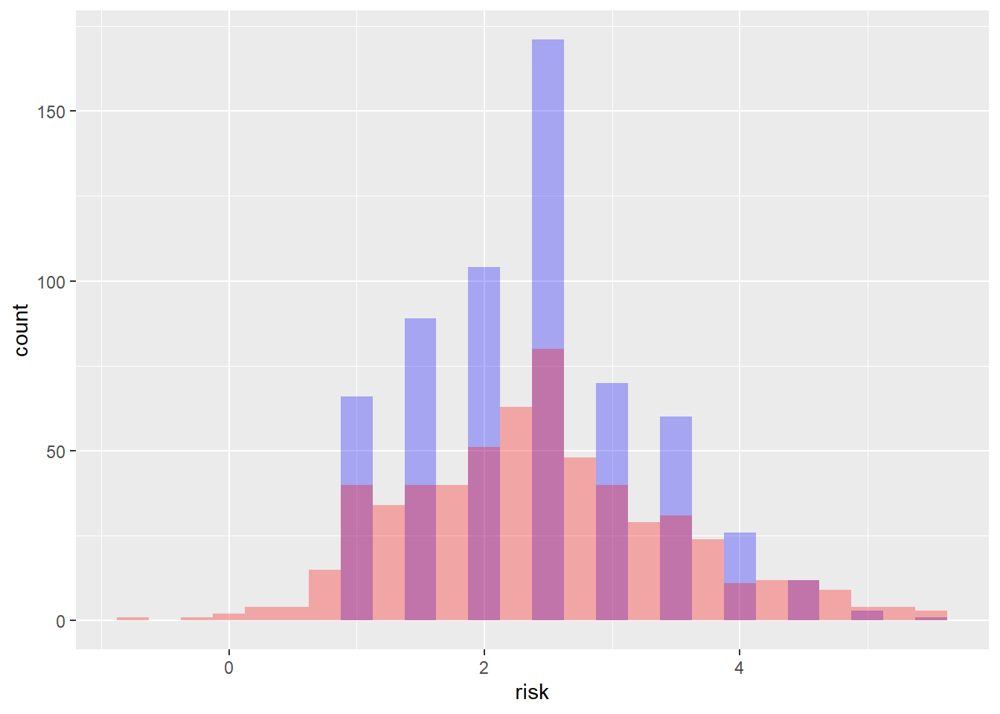

library(tidyverse)
library(janitor)
library(medicaldata)
library(patchwork)
library(ggthemes)
library(VGAM)Differential privacy examples
The data
From the {medicaldata} package, run ?indo_rct.
indo <- indo_rct %>%
select(2:5)
site_b <- ggplot(indo, aes(y=site)) + geom_bar()
age_h <- ggplot(indo, aes(age)) + geom_histogram(binwidth = 1)
risk_h <- ggplot(indo, aes(risk)) + geom_histogram(binwidth = 0.25)
gender_b <- ggplot(indo, aes(y=gender)) + geom_bar()
(site_b | age_h) / (risk_h | gender_b)
indo %>%
mutate(age_rd = signif(age, digits=1)) %>%
tabyl(age_rd, risk, gender)$`1_female`
age_rd 1 1.5 2 2.5 3 3.5 4 4.5 5 5.5
20 1 10 2 8 3 3 1 0 0 0
30 0 10 6 38 11 8 8 0 2 0
40 1 30 13 44 13 22 5 4 0 0
50 13 13 14 36 20 11 5 4 1 1
60 17 7 27 11 10 5 4 0 0 0
70 5 3 10 5 2 2 0 0 0 0
80 2 0 1 0 3 0 0 0 0 0
90 1 0 0 0 0 0 0 0 0 0
$`2_male`
age_rd 1 1.5 2 2.5 3 3.5 4 4.5 5 5.5
20 1 0 3 4 1 1 1 0 0 0
30 2 6 4 6 2 2 0 1 0 0
40 4 3 4 5 4 3 1 2 0 0
50 8 2 12 6 0 2 1 0 0 0
60 7 3 5 6 1 0 0 1 0 0
70 2 2 3 1 0 1 0 0 0 0
80 2 0 0 1 0 0 0 0 0 0
90 0 0 0 0 0 0 0 0 0 0Determining \(k\)-anonymity
indo %>%
group_by(across()) %>%
summarize(k_value = n()) %>%
arrange(desc(k_value))`summarise()` has grouped output by 'site', 'age', 'risk'. You can override
using the `.groups` argument.# A tibble: 412 × 5
# Groups: site, age, risk [368]
site age risk gender k_value
<fct> <dbl> <dbl> <fct> <int>
1 2_IU 40 2.5 1_female 7
2 2_IU 49 2.5 1_female 7
3 2_IU 29 2.5 1_female 6
4 2_IU 30 2.5 1_female 6
5 2_IU 34 2.5 1_female 6
6 2_IU 44 2.5 1_female 6
7 2_IU 48 2.5 1_female 6
8 2_IU 31 2.5 1_female 5
9 2_IU 41 1.5 1_female 5
10 2_IU 47 2.5 1_female 5
# … with 402 more rows
# ℹ Use `print(n = ...)` to see more rowsUsing rounding to generalize:
indo %>%
mutate(age = signif(age, digits=1),
risk = round(risk)) %>%
group_by(across()) %>%
summarize(k_value = n()) %>%
ungroup() %>%
arrange(desc(k_value)) %>%
select(k_value) %>%
tail(1)`summarise()` has grouped output by 'site', 'age', 'risk'. You can override
using the `.groups` argument.# A tibble: 1 × 1
k_value
<int>
1 1What do the rounded data look like?
indo_rd <- indo %>%
mutate(age = signif(age, digits=1),
risk = round(risk))
site_br <- ggplot(indo_rd, aes(y=site)) + geom_bar()
age_hr <- ggplot(indo_rd, aes(age)) + geom_histogram()
risk_hr <- ggplot(indo_rd, aes(risk)) + geom_histogram()
gender_br <- ggplot(indo_rd, aes(y=gender)) + geom_bar()
(site_br | age_hr) / (risk_hr | gender_br)`stat_bin()` using `bins = 30`. Pick better value with `binwidth`.
`stat_bin()` using `bins = 30`. Pick better value with `binwidth`.
A look at the Laplace mechanism
Counting attack: how many patients in the dataset have an age of 45 or older?
indo %>%
filter(age >= 45) %>%
nrow()[1] 307Generating random numbers using the Laplace distribution, using the {VGAM} package’s rlaplace funtion:
sensitivity = 1
epsilon = 0.1
rlaplace(n=1, location=0, scale=sensitivity/epsilon)[1] -4.105466Now let’s add that randomization to our row count:
indo %>%
filter(age >= 45) %>%
nrow() + rlaplace(n=1, location=0, scale=sensitivity/epsilon)[1] 281.3646Sequential composition: the \(\epsilon\)s add up
How does the successive application of mechanisms (via multiple data releases) affect the dataset’s overall privacy budget over time?
Given release \(F_1(x)\) satisfying \(\epsilon_1\)-differential privacy, and release \(F_2(x)\) satisfying \(\epsilon_2\)-differential privacy, the mechanism \(G(x) = (F_1(x), F_2(x))\) which releases both sets satisfies \(\epsilon_1 + \epsilon_2\)-differential privacy as a maximum bound.
sensitivity = 1
epsilon = 1
releases <- tibble(
F1 = rlaplace(n=1000, location=0, scale=sensitivity/1),
F2 = rlaplace(n=1000, location=0, scale=sensitivity/2),
F3 = rlaplace(n=1000, location=0, scale=sensitivity/3),
G = (F1+F2)/2
)
p <- palette.colors("okabe-ito", n=8)
f1_f2_plot <- releases %>%
ggplot() +
geom_freqpoly(aes(F1), binwidth=0.2, color=p["blue"]) +
geom_freqpoly(aes(F2), binwidth=0.2, color=p["vermillion"]) +
labs(title="F1 and F2", x=element_blank()) +
scale_y_continuous(limits=c(0,200)) +
theme_minimal()
f3_plot <- releases %>%
ggplot() +
geom_freqpoly(aes(F3), binwidth=0.2, color=p["bluishgreen"]) +
labs(title="F3", x=element_blank()) +
scale_y_continuous(limits=c(0,300)) +
theme_minimal()
f1_f2_g_plot <- releases %>%
ggplot() +
geom_freqpoly(aes(F1), binwidth=0.2, color=p["blue"]) +
geom_freqpoly(aes(F2), binwidth=0.2, color=p["vermillion"]) +
geom_freqpoly(aes(G), binwidth=0.2, color=p["reddishpurple"]) +
labs(title="G(F1, F2) sequence", x=element_blank()) +
scale_y_continuous(limits=c(0,200)) +
theme_minimal()
f3_g_plot <- releases %>%
ggplot() +
geom_freqpoly(aes(F3), binwidth=0.2, color=p["bluishgreen"]) +
geom_freqpoly(aes(G), binwidth=0.2, color=p["reddishpurple"]) +
labs(title="G(F1, F2) versus F3 (3)", x=element_blank()) +
scale_y_continuous(limits=c(0,300)) +
theme_minimal()
(f1_f2_plot | f1_f2_g_plot) / (f3_plot | f3_g_plot)
Applying the Laplace mechanism to indo_rct
sensitivity = 1
lp1 = rlaplace(n=602, location=0, scale=sensitivity/1)
lp3 = rlaplace(n=602, location=0, scale=sensitivity/3)
indo_dp <- bind_cols(indo, lp1=lp1, lp3=lp3)
indo_dp <- indo_dp %>%
mutate(age_ep1 = age+lp1, age_ep3=age+lp3)
ggplot(indo_dp) +
geom_histogram(aes(age), binwidth=1, alpha=0.3, fill="blue") +
geom_histogram(aes(age_ep1), binwidth=1, alpha=0.3, fill="red")
indo_dp %>%
select(age, age_ep1) %>%
summary() age age_ep1
Min. :19.00 Min. :17.64
1st Qu.:35.00 1st Qu.:34.56
Median :45.00 Median :44.96
Mean :45.27 Mean :45.24
3rd Qu.:54.00 3rd Qu.:54.47
Max. :90.00 Max. :90.12 Let’s try with risk…
sensitivity = 0.4
# code snippet to play with sensitivity for a reasonable result srange:
# sort(rlaplace(n=602, location=0, scale=sensitivity/1))
lp1_rsk = rlaplace(n=602, location=0, scale=sensitivity/1)
indo_dp <- bind_cols(indo_dp, lp1_rsk=lp1_rsk)
indo_dp <- indo_dp %>%
mutate(risk_ep1 = risk+lp1_rsk)
ggplot(indo_dp) +
geom_histogram(aes(risk), binwidth=0.25, alpha=0.3, fill="blue") +
geom_histogram(aes(risk_ep1), binwidth=0.25, alpha=0.3, fill="red")
indo_dp %>%
select(risk, risk_ep1) %>%
summary() risk risk_ep1
Min. :1.000 Min. :-0.8086
1st Qu.:1.500 1st Qu.: 1.6657
Median :2.500 Median : 2.4074
Mean :2.381 Mean : 2.4269
3rd Qu.:3.000 3rd Qu.: 3.0475
Max. :5.500 Max. : 5.5897